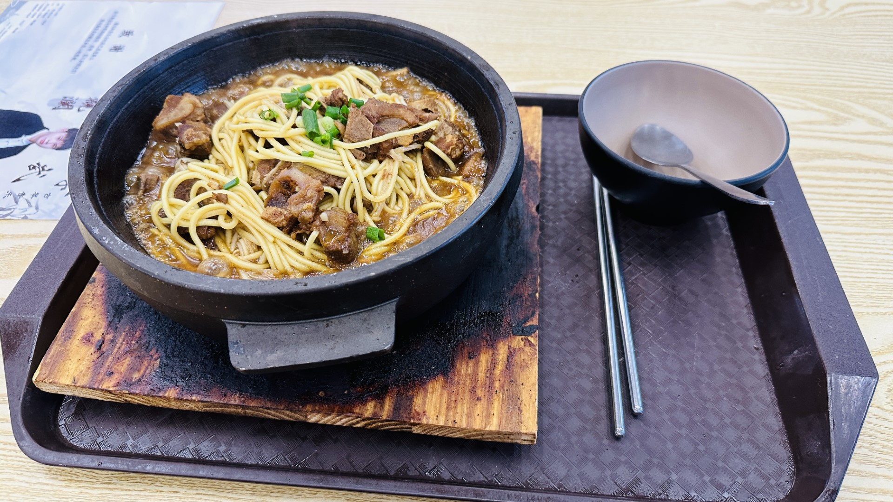

phone still eats first, all food takeaway for consistency and comparison except for a few scenarios
Note that all cost less than 15 RMB (definitely far less than $2-3 USD).
2024, Summer
South Cafeteria
There's few people in the cafeteria that early in the morning, so I was able to grab a few pictures of the first floor. Unfortunately, I couldn't get photos of the second floor as I couldn't find it until too late. Either way, here's a few.
While i couldn't get photos of the North Cafeteria, ample seating and options were available.
Noodles in a Stone Pot

This was by the recommendation of one of the class leaders, who told me to try this restaurant located on the 2nd floor of the South Cafeteria. Unfortunately, I didn't get the name of the shop or the name of this dish (it's a stone pot noodle with pork, I believe). It was flavorful and tasty.
This is one of those dishes that I would not recommend getting to-go, even though you may have seen me get many other options to-go.
Crispy Wrap, Chinese-Style
For breakfast, I ordered a crispy wrap (I think it's a crepe) that was made in front of me. I thought it tasted good.
There was a list of add-ons. Although this was advertised for a different dish, the options were the same as it's the same restaurant.
Staff Cafeteria (breakfast)
For my first (and last) breakfast, I ate at the Staff Cafeteria, courtesy of the breakfast voucher provided by the CIT International Staff.
I opted for a veggie bun, a "meat bun" (I think it was pork, but not sure), and a fried egg. I also got a cup of hot soy milk. They had a large bottle of soy sauce that I also added.
Even with another fried egg, the entire plate (and cup) totaled 8 RMB, which is the amount provided on the voucher.